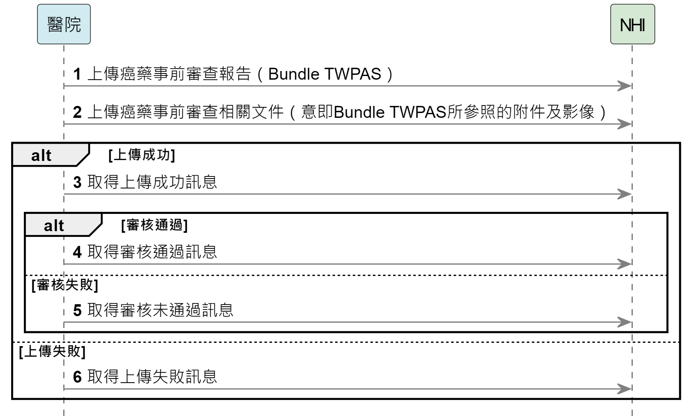
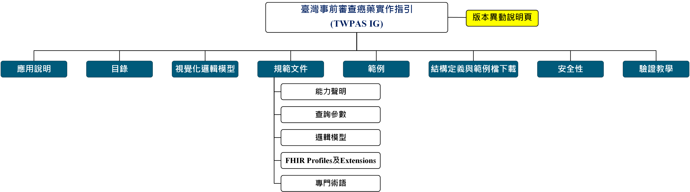

臺灣健保癌症用藥事前審查實作指引 - Downloaded Version 1.0.6 See the Directory of published versions
應用說明
| Official URL: https://nhicore.nhi.gov.tw/pas/ImplementationGuide/tw.gov.mohw.nhi.pas
|
Version:
1.0.6
|
|
Active
as of 2025-07-30
|
Computable Name: TWPAS |
因考量實作需求，於2025/7/29異動以下內容：
- 更新代碼：CodeSystem: NHI-健保事前審查-用藥品項
- 修改Profile: 基因資訊-Observation Diagnostic TWPAS：基因檢測代碼(
component:gene-test-code)改為必填。
- 修改ValueSet: SCT + NCI-健保事前審查-癌症分期量表項目值集：新增SCT代碼
254372002(Ann Arbor lymphoma staging system)。
- 修改CodeSystem: NHI-健保事前審查-藥品使用頻率：新增代碼，
Q3WD1(每3週的第1天)~Q3WD21(每3週的第21天)。
- 修改Profile: 事前審查品項-MedicationRequest Apply TWPAS：原「事前審查藥品處方頻次(cycles)」(
dosageInstruction.timing.repeat.count)修改為「事前審查藥品療程／週期數」，並改為非必填。
- 修改CodeSystem: NHI-健保事前審查-給付適應症：
- 新增代碼
P015、C83N2、C88N3、C82N3。
- 修改代碼說明，詳請參考完整代碼系統_1140716。
- 修改Profile: 事前審查-Bundle TWPAS：
- 修改Constraint: applyReason-7：若事前審查品項代碼(MedicationRequest.medicationCodeableConcept)為 KC01013229，則給付適應症條件代碼(Claim.item.programCode.coding) 僅可為 P001、P011、P012、P031、P041、P061 或 P081
- 修改Constraint: applyReason-8：若事前審查品項代碼(MedicationRequest.medicationCodeableConcept)為 KC01013230，則給付適應症條件代碼(Claim.item.programCode.coding) 僅可為 P001、P011、P012、P031、P041、P052、P061、P081、P101 或 P111
- 修改Constraint: applyReason-11：若事前審查品項代碼(MedicationRequest.medicationCodeableConcept)為 KC01088229，則給付適應症條件代碼(Claim.item.programCode.coding) 僅可為 P015、P021、P072 或 P121
- 新增Constraint: applyReason-15：若事前審查品項代碼(MedicationRequest.medicationCodeableConcept)為 BC28160100，則給付適應症條件代碼(Claim.item.programCode.coding) 僅可為 C83N2、C88N3 或 C82N3
- 新增Constraint: applyReason-16：若事前審查品項代碼(MedicationRequest.medicationCodeableConcept)為 KC01242235，則給付適應症條件代碼(Claim.item.programCode.coding) 僅可為 P072
- 修改Profile: 影像報告-DiagnosticReport Image TWPAS：新增影像報告slice(
code.coding:LOINC)：外院報告請依ICD-10-PCS填寫，若無法對應，可使用LOINC代碼18748-4呈現。
- 修改Profile: 事前審查-Claim TWPAS：修改Constraint: supportingInfo：當Claim.priority(案件類別)為1(一般事前審查申請)、3(自主審查報備)時，至少還需提供檢查報告、影像報告、基因資訊中任一樣資訊。
請留意這些異動，以避免影響您的實作。
專案介紹
臺灣健保癌症用藥事前審查實作指引(Taiwan NHI Cancer Prior Authorization Support Implementation Guide，TWPAS IG)採用HL7® FHIR® standard（Fast Healthcare Interoperability Resources）IG建置方法，在FHIR R4.0.1之標準基礎上，繼承TW Core IG V0.3.2 (2024-12-12)，進一步定義適用於「癌藥事前審查」資料需求的Resources（類似資料表）、其中的資料項目（意即欄位）、基數（意即0..1、0..*、1..1或1..*）及資料類型（文字、日期時間、代碼等）等。
專案背景
衛生福利部中央健康保險署規劃事前審查癌症用藥上傳機制。為扣合賴總統於健康台灣之「國家癌症防治計畫」政策，本署刻正規劃NGS申報資料收載、癌症重大傷病申請、癌藥事前審查申請及癌症個案療效追蹤等癌症醫療資訊之數位轉型，期透過資料有效互通，達成以病人為中心之完整照護。
申請案件類別包含「一般事前審查申請」、「自主審查報備」、「緊急報備」，於Claim.priority呈現。
申報類別包含「送核」、「送核補件」、「申復」、「爭議審議 」、「申復補件 」，於Claim.subType呈現。
送核、送核補件、申復及申復補件之作業流程皆相同，依該個案是首次送審或不同意後再次送審等之狀態進行選擇不同的申報類別，以做為行政程序之判斷。
專案範圍
使用案例(Use Case)
本專案之主要實作者為醫院，醫院透過事前審查系統建立癌藥事前審查資料，透過共通傳輸平台批次上傳癌藥事前審查相關文件，並送至衛生福利部中央健康保險署審核。

循序圖
送核、送核補件、申復及申復補件之作業流程皆相同，依該個案是首次送審或不同意後再次送審等之狀態進行選擇不同的申請類別，以做為行政程序之判斷。
送核、送核補件、申復及申復補件作業流程如下：
- 醫院開發癌藥事前審查系統產生癌藥事前審查報告（Bundle TWPAS）
- 醫院將已產生之事前審查相關文件上傳至健保署
- 若資料符合格式，健保署回覆上傳成功訊息，由醫院查詢上傳結果
- 若資料不符合格式，健保署回覆上傳失敗訊息，由醫院查詢上傳結果
- 資料上傳成功後，審核醫師審核報告通過，由醫院查詢審核結果
- 資料上傳成功後，審核醫師審核報告未通過，由醫院查詢審核結果

如何閱讀這個實作指引(IG)
TWPAS IG之網站架構圖如下圖所示。各功能說明如下：

- 應用說明：TWPAS IG介紹及背景說明。
- 視覺化邏輯模型：TWPAS IG邏輯模型架構視覺化圖。
- 規範文件
- 能力聲明
：應用TWPAS IG於建置業務目的使用的FHIR Server時，該FHIR Server必須及建議應該支援的資料存取功能。
- 查詢參數：查詢FHIR Server的Profiles時，針對各Profiles可使用的查詢參數。
- 邏輯模型
：TWPAS IG的所有邏輯模型(Logical Models)，邏輯模型會定義相應情境下使用的所有資料欄位。為了便於實作者快速理解，資料欄位會使用易於理解的命名，實作者再透過邏輯模型中的功能頁籤「Mappings」瞭解各資料欄位實際使用本IG的哪個Profiles的哪個資料項目(element)。
- FHIR Profiles及Extensions：
- TWPAS IG的所有Profiles之定義與範例及Extensions。
- 各資料項目不同實作強制程度的Terminology。
- 各資料項目的限制（Constraints）。
- 查詢依據TWPAS IG實作之FHIR Server的特定Profiles時，可使用的查詢參數。
- 有哪些Profiles具有查詢參數以及Server必須支援哪些必要的查詢參數功能。
- 專門術語
：TWPAS IG所使用的專門術語，包括代碼系統（Code Systems）、值集（Value Sets）及概念對應（Concept Map）。
- 範例：符合TWPAS IG所定義Profiles之範例檔。
- 結構定義與範例檔下載：實作者若不偏好使用FHIR RESTful API驗證資料是否符合Profiles，可直接下載所需的格式驗證檔，包括XML、JSON及Turtle三種格式，亦可於此下載完整範例檔。
- 安全性：主要說明採用TWPAS IG網站進行實作時，有關資料存取授權的作法。
- 驗證教學：如何驗證實作檔是否遵從TWPAS IG規範。
- 版本異動說明頁：若TWPAS IG網站的版本有所異動，皆可透過異動說明頁得以瞭解版本間的異動差異。
作者與貢獻者
| 作者-IG |
李麗惠 |
國立臺北護理健康大學-健康事業管理系 |
| 作者-IG |
曾鈺珈 |
| 貢獻者-IG |
張如薰 |
衛生福利部中央健康保險署-醫審及藥材組 |
| 貢獻者-IG |
涂奇君 |
| 貢獻者-IG |
張佐安 |
| 貢獻者-IG |
鄧嘉欣 |
| 貢獻者-IG |
醫藥品查驗中心(CDE) |
| 貢獻者-IG |
衛生福利部中央健康保險署-資訊組 |
| 貢獻者-IG |
衛生福利部資訊處 |
如醫院有參與意願，或對資料內容、代碼檔、IG有任何疑問，歡迎聯繫下方窗口：
- 有關資料內容或代碼檔請找張小姐(02-27065866轉3062)、鄧小姐(02-27065866轉3040)
- 有關TWPAS IG請找吳先生(02-27065866轉6048)
- 聯繫信箱:E00@nhi.gov.tw(此信箱僅提供醫院洽詢相關業務事項)
*若民眾對事前審查案申請案件有疑義，請洽各分區業務組。